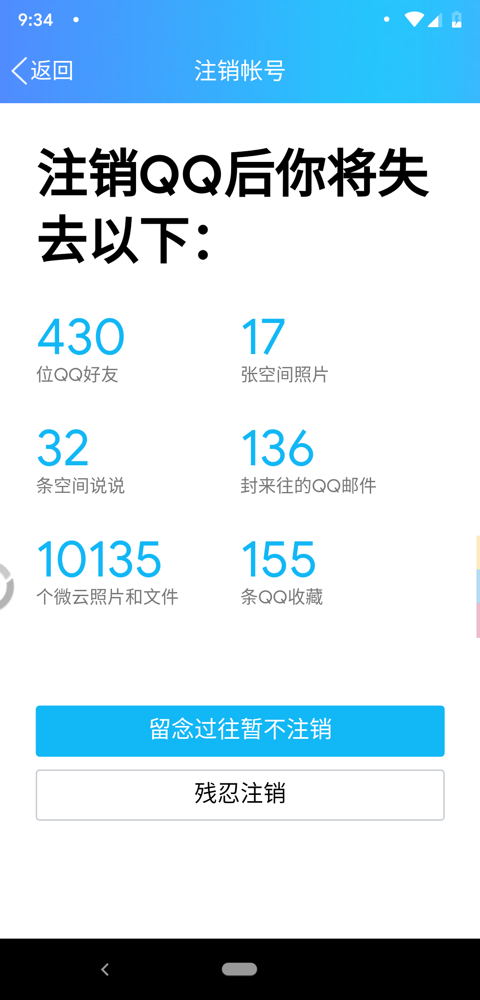

我在今天注销了自己9岁时注册的QQ号。备份文件和照片，发送短信，注销完成。和同学们互踩空间、曾经在群里聊天的快乐时光，这些记忆可能还在，但现在也可以烟消云散了。
不知道什么时候，我已经很少用QQ了。
在注销QQ之前，我已经注销了豆瓣、网易云音乐、微博、知乎这些比较容易注销的国内社交账号，只剩下酷安我忍心没有注销，但也卸载了。这一次注销QQ，应该标志着我已经和国内大多数的App脱钩了，我虽然会经常刷这些网站，但是我不会再注册一个账号去参与互动了。
我想不应该仅凭国内的这些社交网站不好而注销这些账号，而是我已经对它们感到厌倦，我之前写了有关社交媒体的一篇文章思考了关于社交媒体的弊端。
我们活在一个“表演”的世界。为了有自己的生活，每个人都应该有自己的舞台和角色。
可能每个人有多个不同的角色和舞台，但是当你不知道你的角色是什么的时候，外界可能就会赋予你角色，加诸到自己的头上。
而社交媒体就充当着这一个功能。它就像无数人舞台的集合，它十分的喧嚣，吸引着无数的观众。如果你找不到自己的舞台，可能你就会在社交媒体这个大集市里，成为别人的角色。你扮演着别人的角色，展现那所谓光鲜靓丽的一面，吸引着其实不属于你的观众，你不会快乐。只有当你找到自己的角色和舞台的时候，你才能够尽力成为你自己。
同时，社交媒体还会吸引你，不停推送你感兴趣的东西。当你沉沦在其中的同时，你的舞台也消失了，你成为了别人的观众。
对此，我感到很疲倦，觉得我要离开一段时间了。我要重新回到属于我自己的舞台和角色，尽管舞台下面还空无一人。